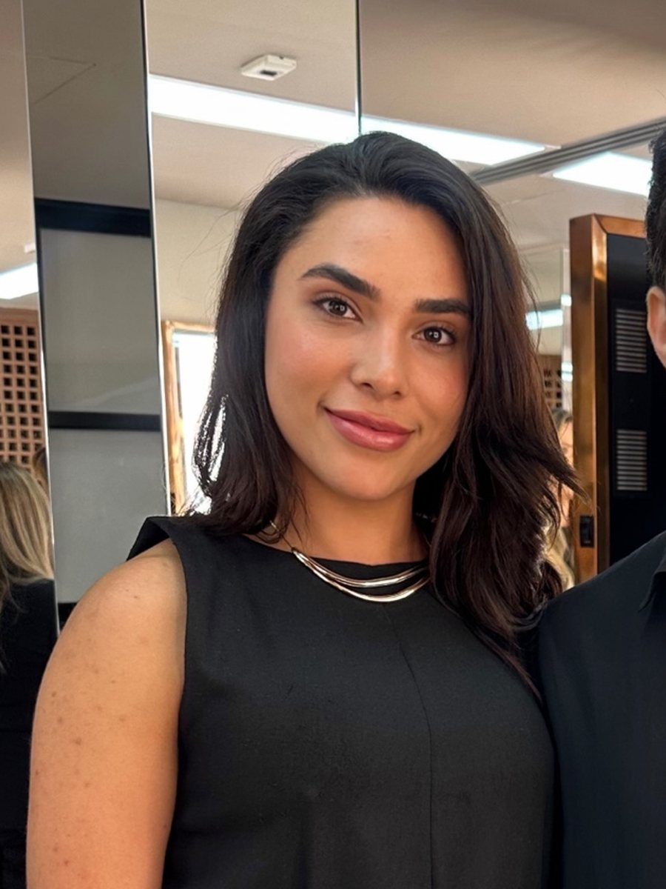
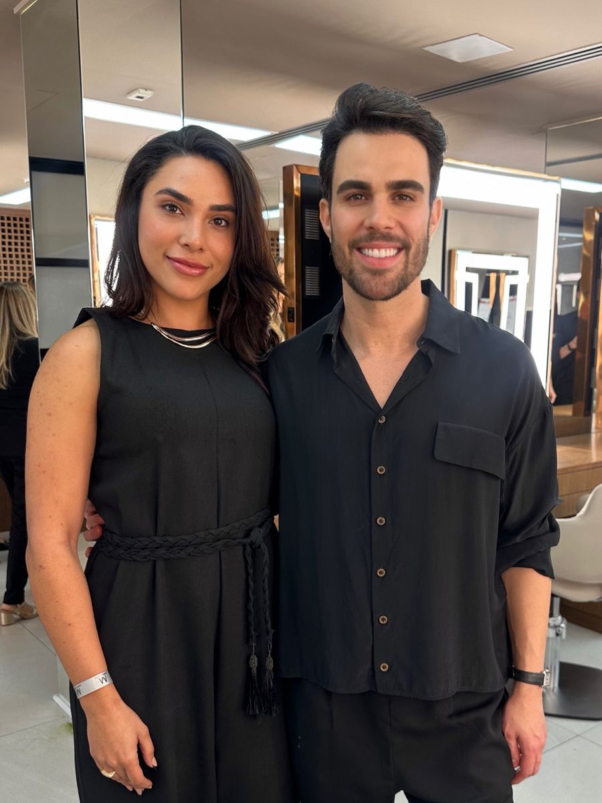
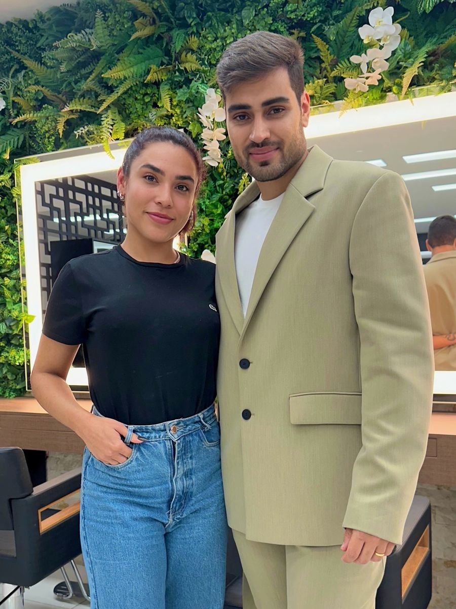
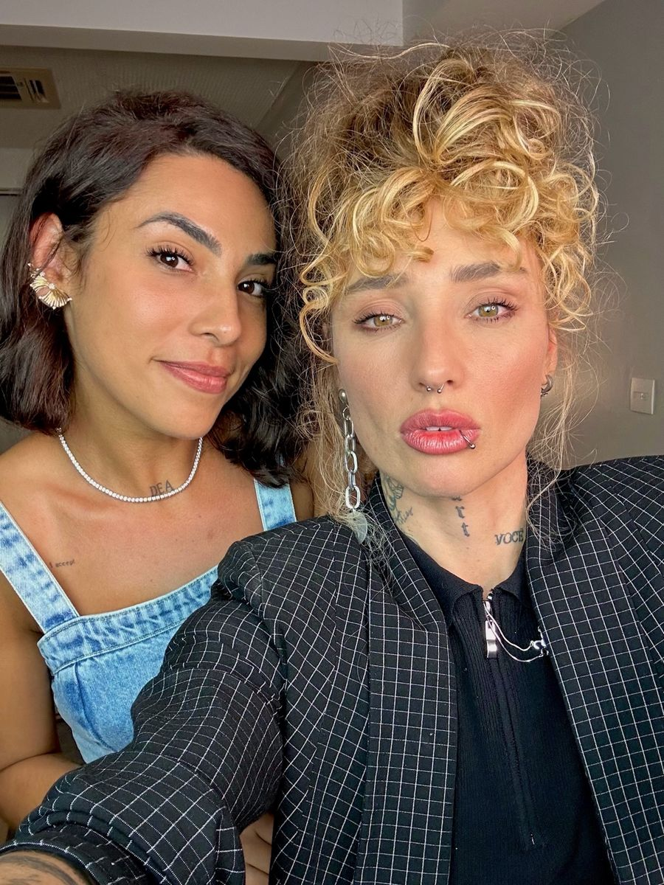
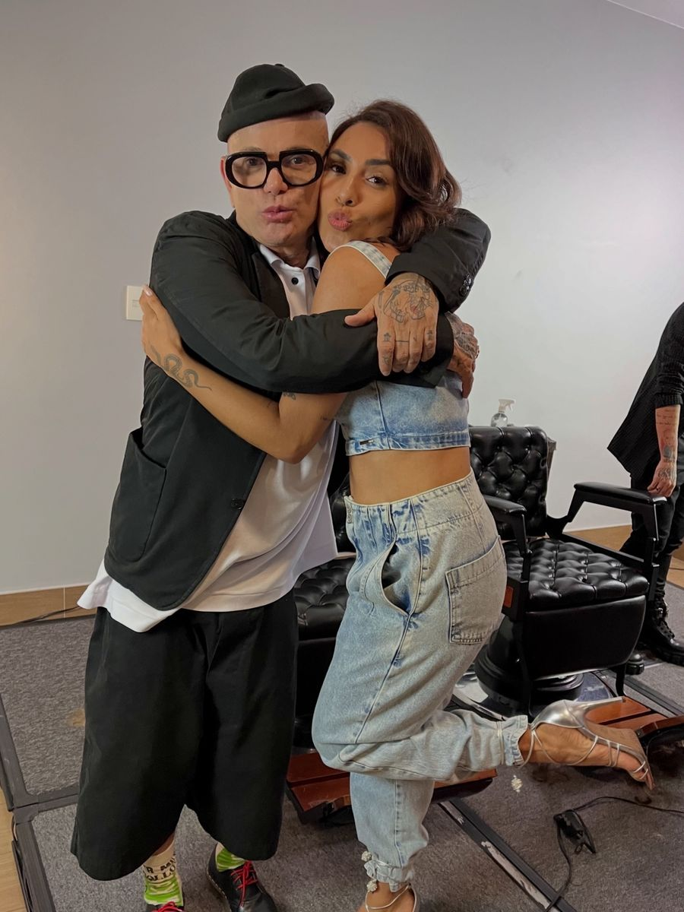
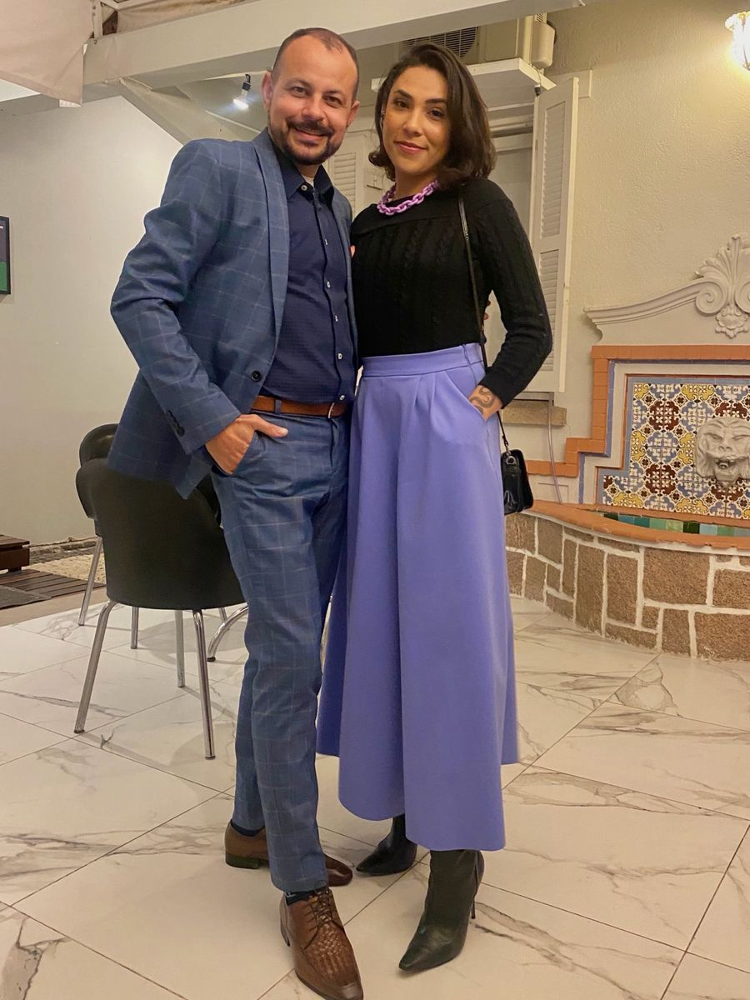
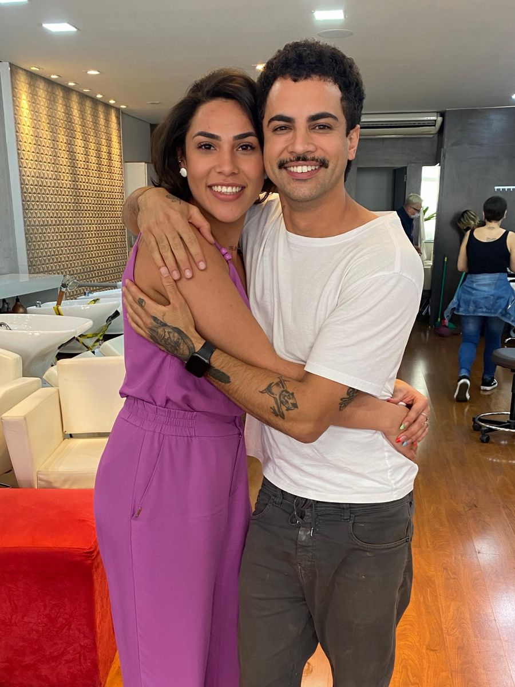

A cliente pede o que viu no celular
E você executa sem ter lido o rosto, a rotina e o histórico do cabelo. O resultado é tecnicamente correto e emocionalmente errado.

Imersão presencial · 12 vagas
Um dia para profissionais da beleza que já dominam a técnica e agora querem dominar o olhar, a conversa e a percepção do próprio trabalho.
Turma limitada · inscrição pelo WhatsApp
Para quem é
A distância entre um trabalho bem feito e um trabalho bem pago quase nunca está na mão. Está no diagnóstico, na conversa e na forma como a cliente entende o que acabou de receber.
E você executa sem ter lido o rosto, a rotina e o histórico do cabelo. O resultado é tecnicamente correto e emocionalmente errado.
Sem um roteiro de atendimento, a conversa cai direto no valor, e o valor sozinho nunca sustenta a decisão.
Enquanto o preço estiver ligado ao tempo de cadeira, subir de patamar significa trabalhar mais. Não é assim que se constrói um ateliê.
O olhar aplicado
Todas as transformações abaixo saíram do ateliê. Arraste para ver o que muda quando o diagnóstico vem antes da técnica.
Arraste a alça · ou use as setas do teclado
O dia
A manhã constrói o olhar. A tarde coloca esse olhar na mão. Entre as duas, um almoço que costuma render tanto quanto o conteúdo.
Manhã
Como construir uma consultoria que gera confiança: o que perguntar, o que observar e como transformar a leitura da cliente em uma proposta que ela entende e aceita.
Tarde
Agora entra a prática. É o momento de transformar conhecimento em resultado, com acompanhamento de perto e correção na hora.
Almoço
Um almoço preparado para que as participantes troquem experiências, criem conexões e ampliem o próprio networking. Não é intervalo. É parte do dia.
Encerramento
Ao final, cada participante recebe o Certificado da Imersão A Arte da Imagem, um selo de autoridade que muda a forma como o mercado enxerga o seu trabalho.
A Arte
da Imagem
Certificado · Ateliê Debora Reis

Quem conduz
Esse é o lema do ateliê e também o critério de tudo o que é ensinado aqui: cabelo que funciona na vida de quem levanta cedo, trabalha e não tem duas horas por dia para reproduzir o resultado do salão.
[Escreva aqui 3 a 4 linhas sobre a sua trajetória: há quantos anos atua, onde se formou, com quem estudou, quantas profissionais já passaram pelo seu atendimento ou pelas suas formações.]
A formação é contínua: cada ano de atualização com referências nacionais volta para a cadeira do ateliê e, agora, para esta imersão.
Débora Reis
Bastidores e formação






Incluso
Turma
8 disponíveis 4 preenchidas
Porque transformar cabelos é uma habilidade.
Construir imagens é uma arte.
Perguntas frequentes
Inscrição
Fale direto com a Débora pelo WhatsApp para conferir a próxima data e garantir uma das 12 vagas.
Quero participarResposta no mesmo dia · sem compromisso